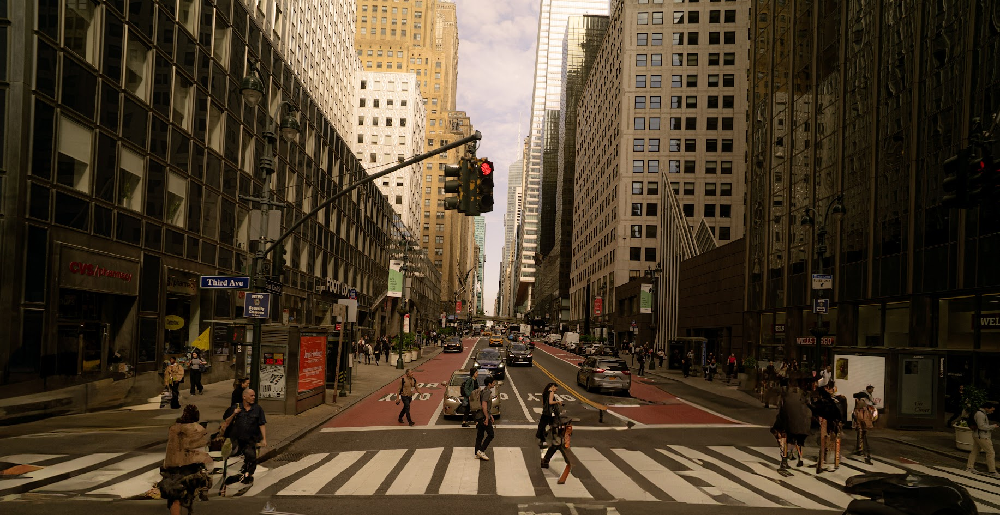
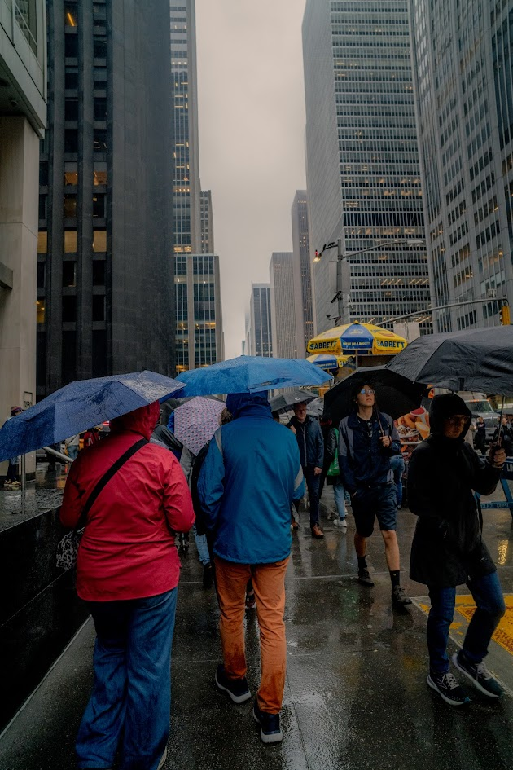

Places
New York City Highlights
New York City is home to countless iconic landmarks, including the Empire State Building, Times Square, the 9/11 Memorial, and the world-renowned Statue of Liberty. It's the most urbanized and vibrant place I have ever visited. Although the city is undeniably expensive, experiencing it even once was truly worth it. The memories I created there with my friends are treasures I’ll cherish forever.

